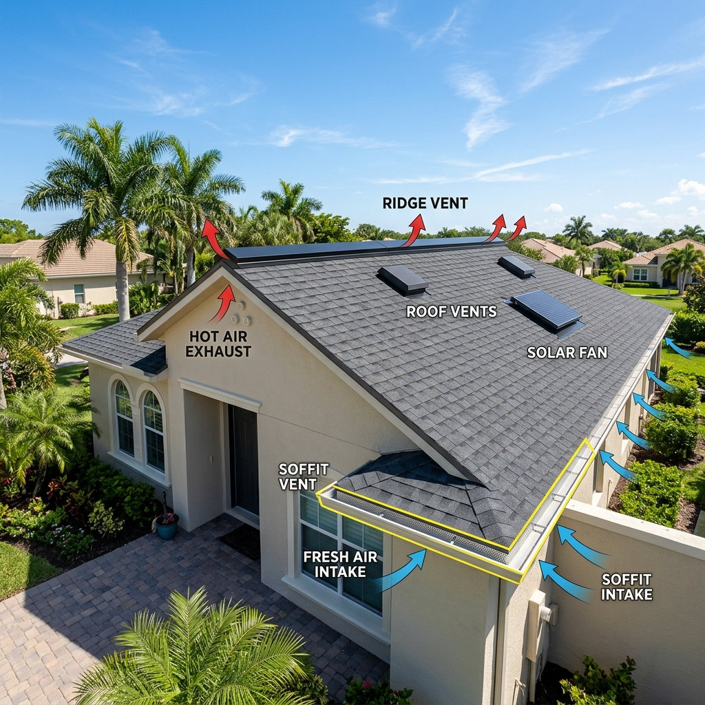

South Florida property owners replace aging roof vents to mitigate extreme attic heat, control humidity levels, extend roofing material longevity, and prevent moisture intrusion. A neglected or damaged venting system turns your attic into a humid oven, accelerating structural rot and voiding manufacturer shingle warranties. Upgrading your ventilation system immediately reduces cooling demands and safeguards your property during heavy rainstorms.

What Role Does Attic Ventilation Play in Broward County Homes?
In Fort Lauderdale, where sub-tropical heat and intense humidity persist throughout the year, proper attic ventilation is a critical factor in structural preservation. Without functioning vents, attic temperatures can easily exceed one hundred and forty degrees, transferring heat directly into your living spaces and forcing air conditioners to run continuously. This trapped heat bakes shingle adhesive from beneath, leading to premature curling, blistering, and material failure. Furthermore, high humidity levels encourage micro-condensation in the attic, resulting in mold growth, structural wood rot, and sagged ceiling drywall, which makes proactive vent replacement essential.
The Main Benefits of Installing Modern Roof Ventilation
1. Continuous Heat Reduction and Cooling Efficiency
A modern, well-designed venting system sets up a continuous, passive flow of air throughout the attic space. As fresh air enters through lower soffits, hot air rises naturally and escapes through upper ridge or off-ridge vents. This continuous thermal exchange keeps attic temperatures aligned with outdoor ambient levels, which prevents heat transfer into your home's interior and lowers cooling bills.
2. Strategic Moisture and Humidity Management
South Florida's daily high humidity routinely migrates into residential attic spaces, where it can quickly condense against cold surfaces. Upgraded roof vents remove this damp air before it can settle onto your rafters and insulation. Keeping the attic dry is the single most effective way to prevent costly wood rot and inhibit toxic mold spores from multiplying.
3. Extending the Longevity of Underlying Decking and Materials
Excessive attic heat acts as a silent catalyst that rapidly breaks down the chemical composition of shingles, underlayments, and plywood roof decking. Providing a balanced intake and exhaust path keeps these structural elements cool, preventing early deck warping and thermal shock. This ventilation helps protect your warranty coverage, as manufacturers often deny claims on poorly ventilated roofs.
4. Preventing Destructive Leaks Around Rusted Penetrations
Traditional metal box vents are highly susceptible to rust, corrosion, and seal degradation over fifteen to twenty years of salt-air exposure. Replacing these outdated structures with high-impact, UV-stabilized polymer or heavy-gauge aluminum vents eliminates the risk of water intrusion. Professional installation ensures that the surrounding flashing is seamlessly integrated with your shingles or tiles, providing long-term windstorm protection.
How Do Hurricane Regulations Impact Attic Vent Specifications?
Vents represent a potential point of water entry during extreme windstorms, making compliance with High Velocity Hurricane Zone (HVHZ) standards essential in South Florida. Broward County building codes require that all attic vents be rigorously tested to prevent wind-driven rain from entering the home under extreme pressure. Licensed contractors like Planet Roofing (licenses CCC1329271 and CGC1517295) use certified, hurricane-rated vents designed to resist impact damage and remain securely attached during storm events.
What Steps Should You Take to Optimize Your Roof Ventilation?
1. **Schedule an Attic Airflow Inspection:** Have a certified roofer evaluate your attic's current temperature, moisture levels, and active vent performance.
2. **Calculate Your Net Free Venting Area:** Determine the precise ratio of intake to exhaust ventilation required to meet local building codes.
3. **Inspect Existing Vent Seals and Flashing:** Check for signs of rust, cracked caulking, or loose nails around your current roof penetrations.
4. **Choose High-Impact Storm-Rated Materials:** Select polymer or heavy-gauge aluminum vents certified for High Velocity Hurricane Zones.
5. **Clear Soffits of Blocked Insulation:** Ensure that intake vents along the roof edges are completely free of fiberglass insulation or debris.
Frequently Asked Questions
What is the cost of replacing roof vents in Fort Lauderdale?
The cost to replace individual roof vents in Broward County typically ranges from $300 to $850 per vent, depending on the vent type, roof height, and material accessibility. Replacing ridge vents or installing advanced solar-powered exhaust fans requires a slightly larger investment. Planet Roofing provides transparent, detailed pricing after inspecting your roof to ensure your ventilation upgrade is tailored to your budget.
How long do typical roof vents last before needing replacement?
Attic vents and penetrations generally have a useful lifespan of fifteen to twenty years, which often matches the durability of standard asphalt shingles. However, salt-air exposure along the Fort Lauderdale coast can accelerate the rusting of steel vents much sooner. Checking your vent seals during an annual inspection ensures that aged components are replaced before they can trigger active leaks.
Is it possible to perform a DIY roof vent replacement?
No, DIY roof vent replacement is not recommended due to strict Florida Building Codes and the complex waterproofing techniques required to prevent storm leaks. Vents are critical structural penetrations, and poor installation will lead to mold, structural wood rot, and immediate roof warranty cancellation. Working with a licensed contractor like Planet Roofing ensures the work is fully permitted, inspected, and warrantied.
Can poor roof ventilation cause my home insurance to be canceled?
Yes, home insurance inspectors in South Florida examine roof condition and ventilation during renewal assessments. Severe wood rot, deck warping, or mold growth caused by trapped attic moisture can prompt an insurer to deny coverage or demand a complete roof replacement. Upgrading your roof vents before these issues arise protects your home and keeps your insurance policy active.
Should you install different types of exhaust vents on the same roof?
No, mixing different types of exhaust vents, such as combining a ridge vent with a powered attic fan, is a common mistake that disrupts the natural airflow balance. A mixture of exhaust types can cause one vent to pull air down from the other, drawing rainwater and humidity directly into your attic. Our experienced team can help you select a single, balanced ventilation style that functions flawlessly.
Need Roof Vent Inspection or Repair?
Ensuring proper attic ventilation is one of the smartest ways to lower energy costs and extend the lifespan of your roof. Our experienced Broward County team is ready to evaluate your home's airflow and recommend code-compliant storm-resistant upgrades. Planet Roofing proudly serves Fort Lauderdale and all surrounding South Florida communities, providing the reliable diagnostics and expert craftsmanship you need. Call (954) 600-1462 today or submit our online form to schedule your professional roof inspection.